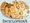

De: La Frikipedia, la enciclopedia extremadamente seria.
De: La Frikipedia, la enciclopedia extremadamente seria. De: La Frikipedia, la enciclopedia extremadamente seria.
|  | Este artículo proviene de la Inciclopedia |
Frikipedio es el muy conocido héroe gallego de mundial fama, que vivió en Gondwana allá por el siglo IX, doscientos años antes del declive final del pastafarismo.
Entre sus hazañas se cuenta el haber vencido a fieros enemigos, entre los que se cuenta el monstruo conocido como La Innombrable, una hidra de siete cabezas pavorosamente grande.
Se cree que el Frikipedio real nació efectivamente un 25 de Julio, en el condado de Pedia, en Galicia, y que vivió entre el año 783 y el 844 d. C. Lideró las primeras batallas contra la herejía cristiana y consiguió frenar su empuje inicial. La leyenda sitúa no obstante su nacimiento en el año 1000. En realidad ese es el año del triunfo definitivo del Cristianismo a costa del Pastafarismo. Las gestas de Frikipedio son anteriores en 200 años.
Este nombre es el que recibió en el siglo XII el conjunto de los textículos que narraban la vida/leyenda de Frikipedio. Aunque este conjunto se halla mutilado, se llama del mismo modo a la recompilación moderna, que está siendo publicada por entregas, textículo a textículo. He aquí los textículos publicados por ahora:
(Por el profesor Mikhail Anxova Varelov, literato ruso-gallego)
Las Gestas del Valiente Caballero Frikipedio fueron recogidas por un monje medieval franciscano de un convento (cuya orden no diré) de la villa de Pontevedra.
Aunque hace pocos años el convento se incendió para cobrar el seguro en un desgraciado accidente, el texto, muy fragmentado, ha sido encontrado entre los códices con miniaturas, incunables y demás papeles higiénicos salvados a duras penas del baño.
Estos textos narran, en un lenguaje cercano al pergamino, por lo que fue escribiendo en las guardas de los volúmenes de la biblioteca del convento. Como los textos eran lógicamente cortos los llamó texticulum (textículos). Son los precursores de los actuales fascículos.
Siglos después, un monje anónimo recogió aquellas guardas (lo que no se ha encontrado son los libros) y lo guardó en un nuevo libro llamado Frikipedio el Caballero. Este libro, que se perdió en la noche de los tiempos, ha sido precisamente el que ha llegado hasta nosotros.
Lo que hoy presento aquí es en realidad una reelaboración moderna, en la que suplo las lagunas del texto basándome en otras Novelas de Caballería de esa época.
Advertencia: Hay quien ha querido ver en esta historia una referencia velada al asunto de la Frikipedia y su cierre por asuntos relacionados con innombrables asociaciones. Nada más lejos de la realidad: el origen del texto es del siglo XIV, y entonces yo aún no conocía la Frikipedia.
Autor(es):